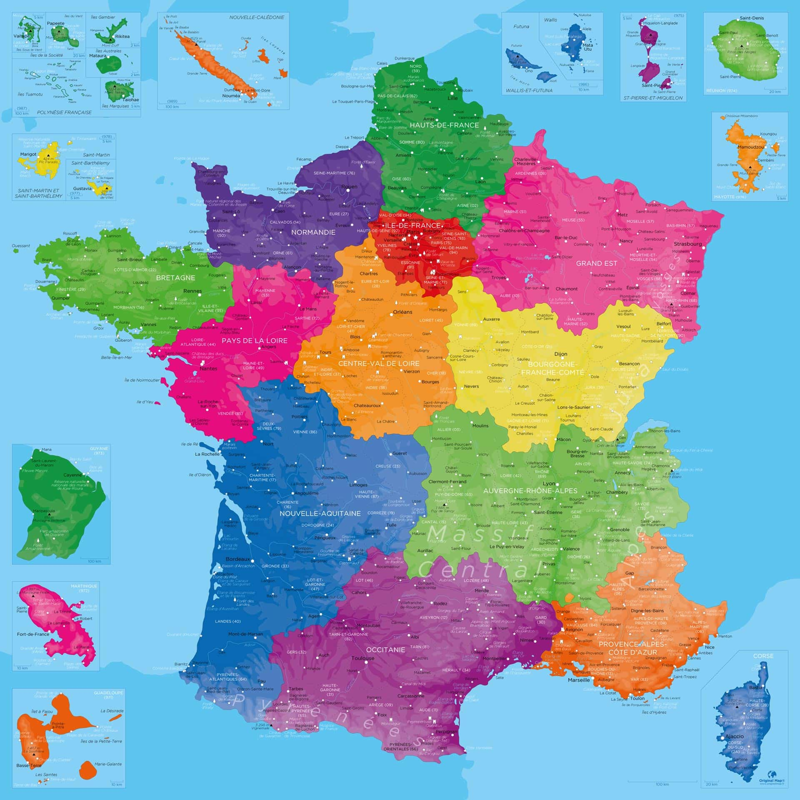

Le quizz des cadors de la culture
ggrgrrrgrg
L'astronomie, spécialisée dans les débris spatiaux.
La création de lunettes de réalité augmentée pour observer les étoiles.
L'étude de la météo sur Mars et ses implications pour l'agriculture spatiale.
La cartographie des astéroïdes qui pourraient potentiellement entrer en collision avec la Terre.
Suivant
